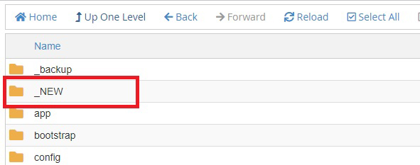
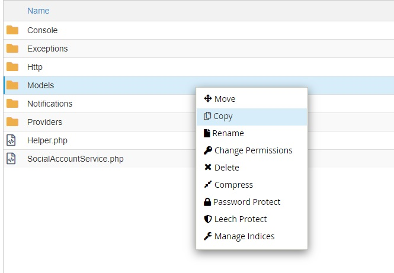
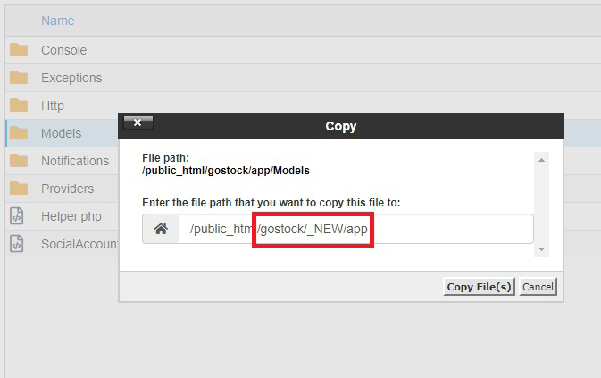
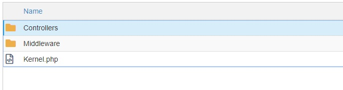
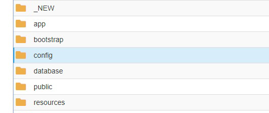
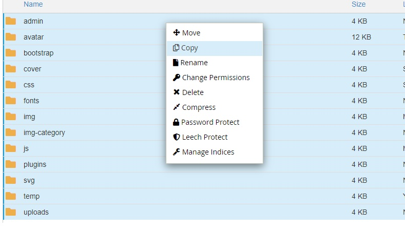
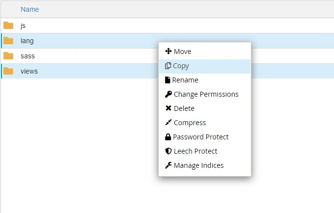

Update v2.4
Guide upgrade to Laravel 5.8
GoStock - Free and Premium Stock Photos Script
Step by Step
If you are downloading for the first time you should not perform these steps.
- Requirements:
- PHP >= 7.1.3
- BCMath PHP Extension
- OpenSSL PHP Extension
- PDO PHP Extension
- Mbstring PHP Extension
- Tokenizer PHP Extension
- XML PHP Extension
- Ctype PHP Extension
- JSON PHP Extension
- First steps
- Upload the
ZIPfile to your server - Create a folder on your server for example called
_NEW, and unzip theZIPfile inside

- Do not delete the files that you will copy below because you will lose all the changes you have made.
- Once the folder is created and the
ZIPfile is decompressed, we will proceed with the upgrade. - You should only copy the files from your current site to the folders mentioned below.
IMPORTANT: If you have any questions to update or do not know how to do it, contact me before you start, once you have made the changes it can not be reversed. You must copy the files from your current site to the folder you created with the new version.
Root directory- .env Copy the credentials of your database again, since the file has new variables in this version.
app- Copy the
Modelsfolder of your current site


- Copy the
app/Http/Controllersfolder of your current site

config- Copy the
configfolder of your current site

public- Copy all the folders from your current site  Important: Do not replace the entire
resources- Copy the folder
resources/langof your current site - Copy the folder
resources/viewsof your current site

routes- Copy the file
routes/web.phpof your current site
public folder copy all folders from your site inside the public folder.
Once all the folders and files have been copied, create a new folder called _backup there will move all the files of your current site as backup, after you move all the files, move all the files of the new folder where I copy the aforementioned files .
There should not be any problem.
Any problem or doubt send me an email to miguelvasquez991@gmail.com
Do not forget to visit miguelvasquez.net